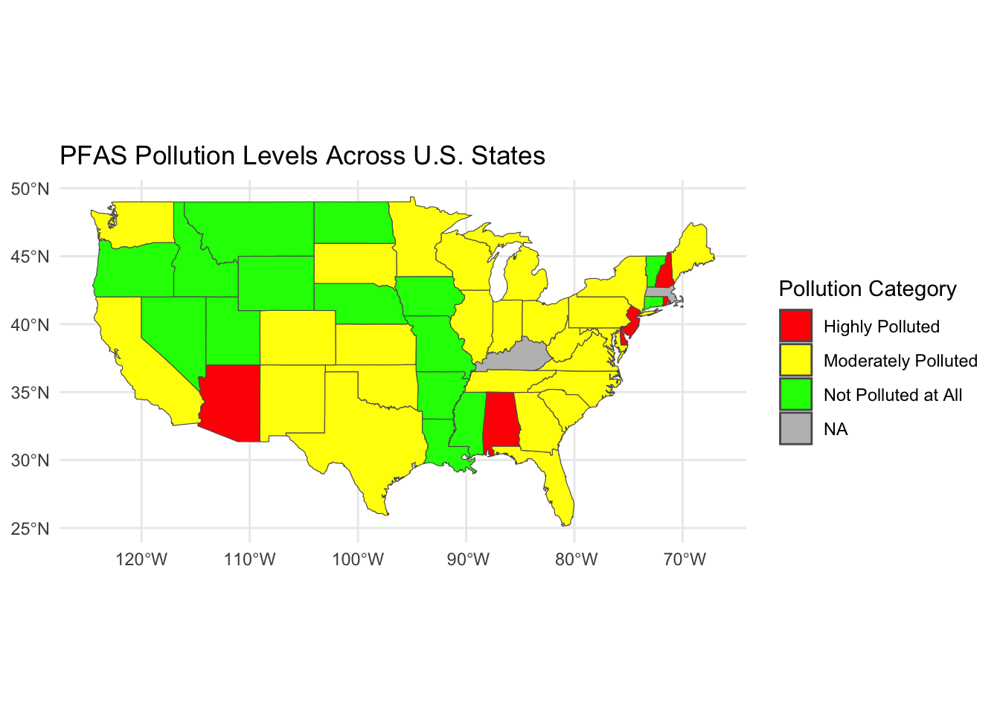
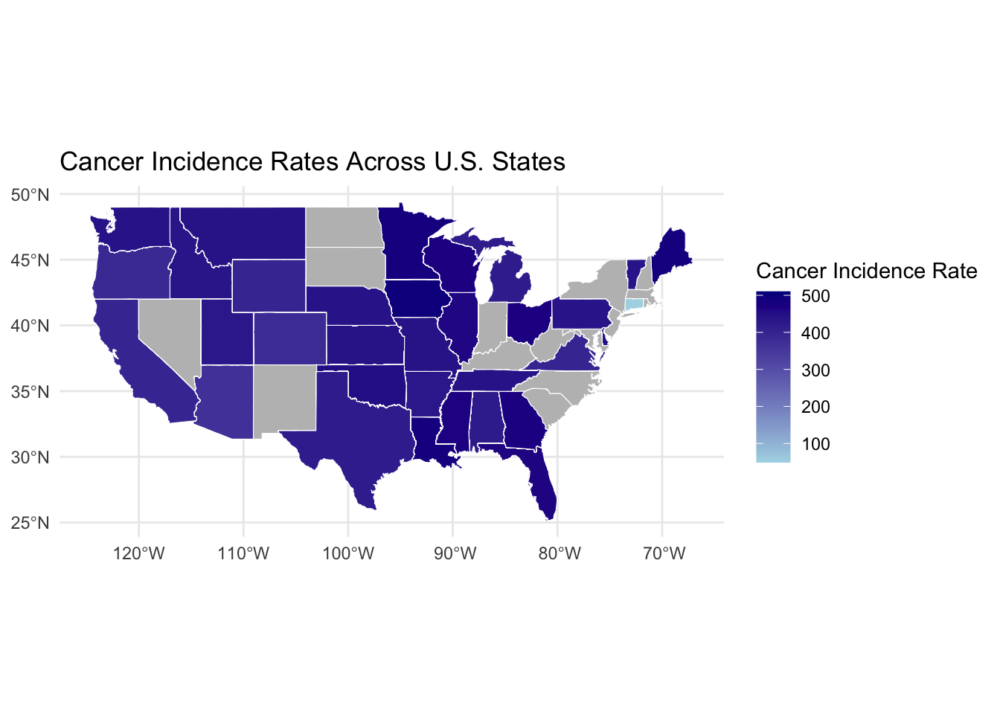

In this R Markdown report, we analyze and compare three methods for quantifying Per- and Polyfluoroalkyl Substances (PFAS) levels across the 52 U.S. states. Our objective is to visualize the relationship between cancer incidence and varying pollution levels, enabling a clearer understanding of the geographic distribution and potential health impacts of PFAS exposure.
Read in the three datasets
library(tidyverse)## ── Attaching core tidyverse packages ──────────────────────── tidyverse 2.0.0 ──
## ✔ dplyr 1.1.4 ✔ readr 2.1.5
## ✔ forcats 1.0.0 ✔ stringr 1.5.1
## ✔ ggplot2 3.5.1 ✔ tibble 3.2.1
## ✔ lubridate 1.9.3 ✔ tidyr 1.3.1
## ✔ purrr 1.0.2
## ── Conflicts ────────────────────────────────────────── tidyverse_conflicts() ──
## ✖ dplyr::filter() masks stats::filter()
## ✖ dplyr::lag() masks stats::lag()
## ℹ Use the conflicted package (<http://conflicted.r-lib.org/>) to force all conflicts to become errorslibrary(readxl)
# US states cancer incidence dataset
fifitystates_df = read_excel("Excel_50 states.xlsx") %>%
janitor::clean_names()
fifitystates_df## # A tibble: 52 × 11
## state year ir male_ir female_ir white_ir black_ir alan_ir api_ir his_ir
## <chr> <dbl> <chr> <chr> <chr> <chr> <chr> <chr> <chr> <chr>
## 1 alabama 2021 422 464.9 393.8 418.7 431.8 90.3 243.1 230.4
## 2 alaska 2021 423 453.5 403.1 416 362.8 591.29… 251.9 297.5
## 3 arizona 2021 368 383.6 359.6 379.7 334.9 269.3 212.5 314.2
## 4 arkans… 2021 430 450.5 420.4 433.6 436.8 169.8 264.7 327.7
## 5 califo… 2021 397 416.1 389.4 436.6 415.8 392.6 305.2 328.1
## 6 colora… 2021 381 385 386.8 385.2 385.7 367.5 288.6… 348.5
## 7 connec… 2021 49 531.9 474.2 502.8 502.7 408.4 278.8 440.7
## 8 delawa… 2021 445 467.3 432.9 458.4 436.1 N/A 220.8 326.2
## 9 distri… 2021 430 455.9 420.6 365.7 487 N/A 208.3 312.7
## 10 florida 2021 465 495.4 446.4 497.9 423.5 367.9 270.1… 383.7
## # ℹ 42 more rows
## # ℹ 1 more variable: state_zipcode <chr># US zipcode dataset
zipcode_df = read_excel ("US_FIPS_Codes.xls") %>%
janitor::clean_names()
zipcode_df## # A tibble: 3,142 × 4
## state county_name state_zipcode fips_county
## <chr> <chr> <chr> <chr>
## 1 Alabama Autauga 01 001
## 2 Alabama Baldwin 01 003
## 3 Alabama Barbour 01 005
## 4 Alabama Bibb 01 007
## 5 Alabama Blount 01 009
## 6 Alabama Bullock 01 011
## 7 Alabama Butler 01 013
## 8 Alabama Calhoun 01 015
## 9 Alabama Chambers 01 017
## 10 Alabama Cherokee 01 019
## # ℹ 3,132 more rows# PFAS level dataset
pfas_df= read_csv ("pfas_county_073124.csv") %>%
janitor::clean_names() %>%
mutate(state_zipcode= substr(county, 1, 2))## Rows: 2038 Columns: 36
## ── Column specification ────────────────────────────────────────────────────────
## Delimiter: ","
## chr (9): County, detected, med_gMRL_PFBS, med_gMRL_PFHpA, med_gMRL_PFHxS, m...
## dbl (27): n_geMRL, n_samples, MRL_ngl_PFBS, MRL_ngl_PFHpA, MRL_ngl_PFHxS, MR...
##
## ℹ Use `spec()` to retrieve the full column specification for this data.
## ℹ Specify the column types or set `show_col_types = FALSE` to quiet this message.pfas_df## # A tibble: 2,038 × 37
## county n_ge_mrl n_samples detected med_g_mrl_pfbs med_g_mrl_pf_hp_a
## <chr> <dbl> <dbl> <chr> <chr> <chr>
## 1 01001 3 318 Yes No No
## 2 01003 0 732 No No No
## 3 01007 0 48 No No No
## 4 01009 34 480 Yes No No
## 5 01013 0 48 No No No
## 6 01015 0 240 No No No
## 7 01017 0 96 No No No
## 8 01019 96 984 Yes No No
## 9 01021 2 132 Yes No No
## 10 01027 0 96 No No No
## # ℹ 2,028 more rows
## # ℹ 31 more variables: med_g_mrl_pf_hx_s <chr>, med_g_mrl_pfna <chr>,
## # med_g_mrl_pfoa <chr>, med_g_mrl_pfos <chr>, mrl_ngl_pfbs <dbl>,
## # mrl_ngl_pf_hp_a <dbl>, mrl_ngl_pf_hx_s <dbl>, mrl_ngl_pfna <dbl>,
## # mrl_ngl_pfoa <dbl>, mrl_ngl_pfos <dbl>, median_pfbs <dbl>,
## # median_pf_hp_a <dbl>, median_pf_hx_s <dbl>, median_pfna <dbl>,
## # median_pfoa <dbl>, median_pfos <dbl>, q1_pfbs <dbl>, q1_pf_hp_a <dbl>, …Merge the three datasets
# left join keeps everything in the dataset that comes first
merged_df_1 =
left_join(pfas_df, fifitystates_df, by = "state_zipcode")
#check the new dataset's variables‘ names
names(merged_df_1)## [1] "county" "n_ge_mrl" "n_samples"
## [4] "detected" "med_g_mrl_pfbs" "med_g_mrl_pf_hp_a"
## [7] "med_g_mrl_pf_hx_s" "med_g_mrl_pfna" "med_g_mrl_pfoa"
## [10] "med_g_mrl_pfos" "mrl_ngl_pfbs" "mrl_ngl_pf_hp_a"
## [13] "mrl_ngl_pf_hx_s" "mrl_ngl_pfna" "mrl_ngl_pfoa"
## [16] "mrl_ngl_pfos" "median_pfbs" "median_pf_hp_a"
## [19] "median_pf_hx_s" "median_pfna" "median_pfoa"
## [22] "median_pfos" "q1_pfbs" "q1_pf_hp_a"
## [25] "q1_pf_hx_s" "q1_pfna" "q1_pfoa"
## [28] "q1_pfos" "q3_pfbs" "q3_pf_hp_a"
## [31] "q3_pf_hx_s" "q3_pfna" "q3_pfoa"
## [34] "q3_pfos" "n_med_g_mrl" "pfas_cat"
## [37] "state_zipcode" "state" "year"
## [40] "ir" "male_ir" "female_ir"
## [43] "white_ir" "black_ir" "alan_ir"
## [46] "api_ir" "his_ir"#check how many distinct datasets
n_distinct(merged_df_1$state)## [1] 52Method 1: Take the median of all the variables that start with a “median” prefix, eg. median_pfbs Group by state code Combine all the county codes for each state and then calculate the median
state_medians =
merged_df_1 %>%
group_by(state) %>%
summarise(across(starts_with("median"), median, na.rm = TRUE))## Warning: There was 1 warning in `summarise()`.
## ℹ In argument: `across(starts_with("median"), median, na.rm = TRUE)`.
## ℹ In group 1: `state = "Kentucy"`.
## Caused by warning:
## ! The `...` argument of `across()` is deprecated as of dplyr 1.1.0.
## Supply arguments directly to `.fns` through an anonymous function instead.
##
## # Previously
## across(a:b, mean, na.rm = TRUE)
##
## # Now
## across(a:b, \(x) mean(x, na.rm = TRUE))print(state_medians)## # A tibble: 52 × 7
## state median_pfbs median_pf_hp_a median_pf_hx_s median_pfna median_pfoa
## <chr> <dbl> <dbl> <dbl> <dbl> <dbl>
## 1 Kentucy 63.6 7.07 21.2 14.1 14.1
## 2 alabama 63.6 7.07 21.2 14.1 14.1
## 3 alaska 63.6 7.07 21.2 14.1 14.1
## 4 arizona 63.6 7.07 21.2 14.1 14.1
## 5 arkansas 63.6 7.07 21.2 14.1 14.1
## 6 california 63.6 7.07 21.2 14.1 14.1
## 7 colorado 63.6 7.07 21.2 14.1 14.1
## 8 connecticut 63.6 7.07 21.2 14.1 14.1
## 9 delaware 63.6 7.07 21.2 14.1 14.1
## 10 district o… 63.6 7.07 21.2 14.1 14.1
## # ℹ 42 more rows
## # ℹ 1 more variable: median_pfos <dbl>Method 2 - binerization If one county has detected/median, call this state as detected/exposed A state can only be called non detected when all counties are non-detected
state_detection_status =
merged_df_1 %>%
group_by(state) %>%
summarise(detection_status = ifelse(any(detected == "Yes"), "Detected", "Not Detected"))
# View the result
print(state_detection_status)## # A tibble: 52 × 2
## state detection_status
## <chr> <chr>
## 1 Kentucy Detected
## 2 alabama Detected
## 3 alaska Not Detected
## 4 arizona Detected
## 5 arkansas Not Detected
## 6 california Detected
## 7 colorado Detected
## 8 connecticut Not Detected
## 9 delaware Detected
## 10 district of columbia Not Detected
## # ℹ 42 more rowstable(state_detection_status$detection_status, useNA= "always" )##
## Detected Not Detected <NA>
## 33 19 0Method 3 - categorization using threshold Create a new column for each state by calculating the number of counties that are detected Find the cut point
#First determine the counts
state_detection_counts =
merged_df_1 %>%
group_by(state) %>%
summarise(
yes_detected = sum(detected == "Yes"),
no_not_detected = sum(detected == "No"),
total_samples = n()
)
# calculate the proportion of detection
state_detection_counts_proportion =
state_detection_counts %>%
mutate(
detection_proportion = yes_detected / total_samples
)Try out different thresholds
# 75%
state_detection_method3_seventyfive =
state_detection_counts %>%
mutate(
detection_proportion = yes_detected / total_samples,
pollution_category = case_when(
detection_proportion > 0.75 ~ "Highly Polluted",
detection_proportion > 0 & detection_proportion <= 0.75 ~ "Moderately Polluted",
detection_proportion == 0 ~ "Not Polluted at All"
)
)
state_detection_method3_seventyfive ## # A tibble: 52 × 6
## state yes_detected no_not_detected total_samples detection_proportion
## <chr> <int> <int> <int> <dbl>
## 1 Kentucy 14 94 108 0.130
## 2 alabama 19 37 56 0.339
## 3 alaska 0 5 5 0
## 4 arizona 4 9 13 0.308
## 5 arkansas 0 42 42 0
## 6 california 12 36 48 0.25
## 7 colorado 2 32 34 0.0588
## 8 connecticut 0 8 8 0
## 9 delaware 1 2 3 0.333
## 10 district of … 0 1 1 0
## # ℹ 42 more rows
## # ℹ 1 more variable: pollution_category <chr>table (state_detection_method3_seventyfive $pollution_category, useNA = "always")##
## Moderately Polluted Not Polluted at All <NA>
## 33 19 0# 60%
state_detection_method3_sixty =
state_detection_counts %>%
mutate(
detection_proportion = yes_detected / total_samples,
pollution_category = case_when(
detection_proportion > 0.60 ~ "Highly Polluted",
detection_proportion > 0 & detection_proportion <= 0.60 ~ "Moderately Polluted",
detection_proportion == 0 ~ "Not Polluted at All"
)
)
state_detection_method3_sixty ## # A tibble: 52 × 6
## state yes_detected no_not_detected total_samples detection_proportion
## <chr> <int> <int> <int> <dbl>
## 1 Kentucy 14 94 108 0.130
## 2 alabama 19 37 56 0.339
## 3 alaska 0 5 5 0
## 4 arizona 4 9 13 0.308
## 5 arkansas 0 42 42 0
## 6 california 12 36 48 0.25
## 7 colorado 2 32 34 0.0588
## 8 connecticut 0 8 8 0
## 9 delaware 1 2 3 0.333
## 10 district of … 0 1 1 0
## # ℹ 42 more rows
## # ℹ 1 more variable: pollution_category <chr>table (state_detection_method3_sixty$pollution_category, useNA = "always")##
## Highly Polluted Moderately Polluted Not Polluted at All <NA>
## 1 32 19 0# 90%
state_detection_method3_ninty =
state_detection_counts %>%
mutate(
detection_proportion = yes_detected / total_samples,
pollution_category_ninty = case_when(
detection_proportion > 0.90 ~ "Highly Polluted",
detection_proportion > 0 & detection_proportion <= 0.90 ~ "Moderately Polluted",
detection_proportion == 0 ~ "Not Polluted at All"
)
)
state_detection_method3_ninty ## # A tibble: 52 × 6
## state yes_detected no_not_detected total_samples detection_proportion
## <chr> <int> <int> <int> <dbl>
## 1 Kentucy 14 94 108 0.130
## 2 alabama 19 37 56 0.339
## 3 alaska 0 5 5 0
## 4 arizona 4 9 13 0.308
## 5 arkansas 0 42 42 0
## 6 california 12 36 48 0.25
## 7 colorado 2 32 34 0.0588
## 8 connecticut 0 8 8 0
## 9 delaware 1 2 3 0.333
## 10 district of … 0 1 1 0
## # ℹ 42 more rows
## # ℹ 1 more variable: pollution_category_ninty <chr>table (state_detection_method3_ninty $pollution_category_ninty, useNA = "always")##
## Moderately Polluted Not Polluted at All <NA>
## 33 19 0# 80%
state_detection_method3_eighty =
state_detection_counts %>%
mutate(
detection_proportion = yes_detected / total_samples,
pollution_category = case_when(
detection_proportion > 0.80 ~ "Highly Polluted",
detection_proportion > 0 & detection_proportion <= 0.80 ~ "Moderately Polluted",
detection_proportion == 0 ~ "Not Polluted at All"
)
)
state_detection_method3_eighty ## # A tibble: 52 × 6
## state yes_detected no_not_detected total_samples detection_proportion
## <chr> <int> <int> <int> <dbl>
## 1 Kentucy 14 94 108 0.130
## 2 alabama 19 37 56 0.339
## 3 alaska 0 5 5 0
## 4 arizona 4 9 13 0.308
## 5 arkansas 0 42 42 0
## 6 california 12 36 48 0.25
## 7 colorado 2 32 34 0.0588
## 8 connecticut 0 8 8 0
## 9 delaware 1 2 3 0.333
## 10 district of … 0 1 1 0
## # ℹ 42 more rows
## # ℹ 1 more variable: pollution_category <chr>table (state_detection_method3_eighty $pollution_category, useNA = "always") ##
## Moderately Polluted Not Polluted at All <NA>
## 33 19 0# summary
summary(state_detection_method3_sixty$detection_proportion)## Min. 1st Qu. Median Mean 3rd Qu. Max.
## 0.00000 0.00000 0.05196 0.10093 0.13426 0.66667# 50% threshold
state_detection_method3_fifty =
state_detection_counts %>%
mutate(
detection_proportion = yes_detected / total_samples,
pollution_category = case_when(
detection_proportion > 0.50 ~ "Highly Polluted",
detection_proportion > 0 & detection_proportion <= 0.50 ~ "Moderately Polluted",
detection_proportion == 0 ~ "Not Polluted at All"
)
)
state_detection_method3_fifty ## # A tibble: 52 × 6
## state yes_detected no_not_detected total_samples detection_proportion
## <chr> <int> <int> <int> <dbl>
## 1 Kentucy 14 94 108 0.130
## 2 alabama 19 37 56 0.339
## 3 alaska 0 5 5 0
## 4 arizona 4 9 13 0.308
## 5 arkansas 0 42 42 0
## 6 california 12 36 48 0.25
## 7 colorado 2 32 34 0.0588
## 8 connecticut 0 8 8 0
## 9 delaware 1 2 3 0.333
## 10 district of … 0 1 1 0
## # ℹ 42 more rows
## # ℹ 1 more variable: pollution_category <chr>table (state_detection_method3_fifty $pollution_category, useNA = "always") ##
## Highly Polluted Moderately Polluted Not Polluted at All <NA>
## 1 32 19 0# 30% threshold - KEEP IT AT THIS THRESHOLD
state_detection_method3_thirty =
state_detection_counts %>%
mutate(
detection_proportion = yes_detected / total_samples,
pollution_category = case_when(
detection_proportion > 0.30 ~ "Highly Polluted",
detection_proportion > 0 & detection_proportion <= 0.30 ~ "Moderately Polluted",
detection_proportion == 0 ~ "Not Polluted at All"
)
)
# view results
state_detection_method3_thirty ## # A tibble: 52 × 6
## state yes_detected no_not_detected total_samples detection_proportion
## <chr> <int> <int> <int> <dbl>
## 1 Kentucy 14 94 108 0.130
## 2 alabama 19 37 56 0.339
## 3 alaska 0 5 5 0
## 4 arizona 4 9 13 0.308
## 5 arkansas 0 42 42 0
## 6 california 12 36 48 0.25
## 7 colorado 2 32 34 0.0588
## 8 connecticut 0 8 8 0
## 9 delaware 1 2 3 0.333
## 10 district of … 0 1 1 0
## # ℹ 42 more rows
## # ℹ 1 more variable: pollution_category <chr>table (state_detection_method3_thirty $pollution_category, useNA = "always") ##
## Highly Polluted Moderately Polluted Not Polluted at All <NA>
## 7 26 19 0We ultimately chose a 30% threshold to ensure that each category includes at least five states, meeting the recommended minimum for categorical analysis.
library(maps)##
## Attaching package: 'maps'## The following object is masked from 'package:purrr':
##
## maplibrary(leaflet)
library(ggplot2)
library(dplyr)
library(sf)## Linking to GEOS 3.11.0, GDAL 3.5.3, PROJ 9.1.0; sf_use_s2() is TRUE# Create a PFAS pollution level map
# Load U.S. state map data using sf package
us_states <- st_as_sf(maps::map("state", plot = FALSE, fill = TRUE))
# clean the "state_detection_method3_thirty" dataset
state_detection_method3_thirty <- state_detection_method3_thirty %>%
mutate(state = case_when(
state == "new_hampshire" ~ "new hampshire",
state == "new_jersey" ~ "new jersey",
state == "new_mexico" ~ "new mexico",
state == "new_york" ~ "new york",
state == "north_carolina" ~ "north carolina",
state == "north_dakota" ~ "north dakota",
state == "rhode_island" ~ "rhode island",
state == "south_carolina" ~ "south carolina",
state == "south_dakota" ~ "south dakota",
state == "west_virginia" ~ "west virginia",
TRUE ~ state # Keep the original name if no change is needed
))
# Merge state map data with pollution data
state_detection_map <- us_states %>%
left_join(state_detection_method3_thirty, by = c("ID" = "state"))ggplot(data = state_detection_map) +
geom_sf(aes(fill = pollution_category)) +
scale_fill_manual(values = c("Highly Polluted" = "red", "Moderately Polluted" = "yellow", "Not Polluted at All" = "green"), na.value = "grey") +
labs(
title = "PFAS Pollution Levels Across U.S. States",
fill = "Pollution Category"
) +
theme_minimal()
# Create a cancer incidence gradient map
us_states <- st_as_sf(maps::map("state", plot = FALSE, fill = TRUE))
merged_df_1 <- merged_df_1 %>%
mutate(state = case_when(
state == "new hampshire" ~ "new hampshire",
state == "new jersey" ~ "new jersey",
state == "new mexico" ~ "new mexico",
state == "new york" ~ "new york",
state == "north carolina" ~ "north carolina",
state == "north dakota" ~ "north dakota",
state == "rhode island" ~ "rhode island",
state == "south carolina" ~ "south carolina",
state == "south dakota" ~ "south dakota",
state == "west virginia" ~ "west virginia",
TRUE ~ state # Keep other states as they are
)) %>%
mutate(ir = as.numeric(trimws(ir))) # Convert 'ir' to numeric## Warning: There was 1 warning in `mutate()`.
## ℹ In argument: `ir = as.numeric(trimws(ir))`.
## Caused by warning:
## ! NAs introduced by coercionif(any(is.na(merged_df_1$ir))) {
warning("Some values in the 'ir' column could not be converted to numeric and were set to NA.")
}## Warning: Some values in the 'ir' column could not be converted to numeric and
## were set to NA.state_detection_map <- us_states %>%
full_join(merged_df_1, by = c("ID" = "state"))
ggplot(data = state_detection_map) +
geom_sf(aes(fill = ir), color = "white") +
scale_fill_gradient(low = "lightblue", high = "darkblue", na.value = "grey", name = "Cancer Incidence Rate") +
labs(
title = "Cancer Incidence Rates Across U.S. States",
fill = "Incidence Rate"
) +
theme_minimal()